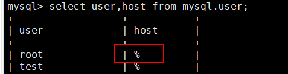

当MySQL/MariaDB/GreatSQL数据库所在主机安装ProtectAgent后，OceanProtect会自动发现MySQL/MariaDB/GreatSQL数据库主机，您需要在管理界面上注册主机上的数据库，以对其进行保护或将其作为恢复目标。
背景信息
OceanProtect支持备份MySQL/MariaDB/GreatSQL数据库以及其他自定义数据库，不支持备份系统数据库information_schema、performance_schema、sys和mysql。因此不支持注册系统数据库。
前提条件

要求集群中所有节点的数据同步。
注册MySQL/MariaDB/GreatSQL单实例
- 选择“保护 > 数据库 > MySQL/MariaDB/GreatSQL”。
- 选择“实例”页签。
- 单击“注册”，注册MySQL/MariaDB/GreatSQL。
MySQL/GreatSQL集群环境下的所有实例不能用于单实例注册。
- “类型”选择“单实例”。
- 配置数据库实例及其认证信息。
相关参数说明如表1所示。
表1 MySQL/MariaDB/GreatSQL单实例注册信息 参数
说明
名称
自定义实例名称。
主机
选择要注册的数据库主机。
添加访问MySQL地址
访问MySQL服务的IP地址。
端口
Linux环境下，界面显示为端口号，默认为3306。
用户名
请填写步骤1：开启MySQL/MariaDB/GreatSQL数据库权限创建的用户名。
密码
用户名密码。
字符集
说明：仅在1.6.0及后续版本展示该参数。
数据库字符集。
MySQL配置文件路径
说明：仅在1.5.0.SPC16及后续版本展示该参数。
如果MySQL配置文件存放路径为非默认路径，请填入MySQL配置文件路径。
查询配置文件的默认路径方法如下：
- 登录数据库主机。
- 执行以下命令，以查找my.cnf配置文件为例：
mysql --help | grep 'my.cnf'
- 单击“确定”。
注册MySQL/MariaDB/GreatSQL集群实例
- 注册集群。
- 在MySQL/MariaDB/GreatSQL页面选择“集群”页签。
- 单击“注册”。
- 在“注册”页面，自定义集群名称并选择类型和集群节点。相关参数说明如表2。
表2 注册集群参数说明 参数
说明
名称
自定义集群名称。
类型
集群类型可选择主备复制、主主复制和PXC(Percona XtraDB Cluster)类型。
说明：GreatSQL仅支持选择主备复制类型。
- 若选择“主备复制”类型，则需要包含MySQL/MariaDB/GreatSQL主实例所在节点。
- 若选择“PXC(Percona XtraDB Cluster)”类型，则需要包含MySQL/MariaDB集群实例所在节点。
- 若选择“主主复制”类型，则需要包含MySQL/MariaDB集群实例所在节点。
集群节点
MySQL/MariaDB/GreatSQL实例所在的主机。
- 所选择的主机必须来源于同一集群。
- 当数据库集群类型为主备集群时，在 /etc/my.cnf配置文件中，如果有relay-log配置项，请设置relay_log_recovery取值为on与之配合使用（避免恢复失败）。
- 单击“确定”。
- 注册集群实例。
- 在MySQL/MariaDB/GreatSQL页面选择“实例”页签。
- 单击“注册”。
- “类型”选择“集群实例”。
- 输入实例名，选择集群。
- 单击“添加”，在弹出的添加对话框中添加集群实例下的所有节点。
相关参数说明如表3所示。
表3 集群实例的节点信息 参数
说明
主机
选择集群下的主机节点。
eAppMySQL地址
访问eAppMySQL服务IP地址。
说明：GreatSQL不支持该参数。
端口
Linux环境下，界面显示为端口号，默认为3306。若集群类型选择为“主主复制”，则端口号为3307。
用户名
请填写步骤1：开启MySQL/MariaDB/GreatSQL数据库权限创建的用户名。
使用root用户，登录MySQL/MariaDB/GreatSQL主机，执行如下命令登录MySQL/MariaDB/GreatSQL数据库。
mysql -uroot -pPassword
执行如下命令给该用户开放远程连接权限。UPDATE mysql.user SET user.Host='%' where user.User='用户名'; flush privileges;
回显如下，“host”为“%”，则表示已开放远程连接权限。

密码
数据库密码。
字符集
说明：仅在1.6.0及后续版本展示该参数。
数据库字符集。
MySQL配置文件路径
说明：仅在1.6.0及后续版本展示该参数。
如果配置文件非默认路径，如/etc/my.cnf等，请填入MySQL配置文件路径。
- 单击“确定”。